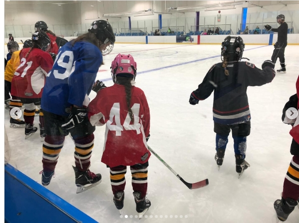
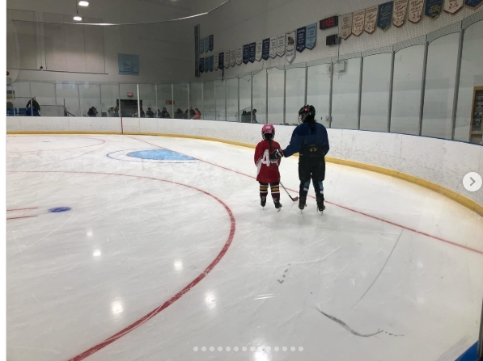
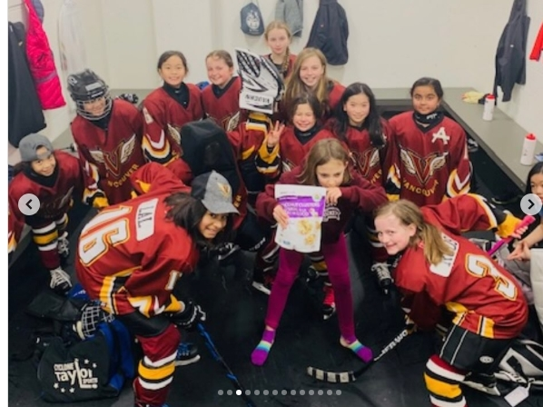
Even in youth, nothing seemed to speak to me the way hockey did. From the moment I could walk, my family was constantly trying to get me into sports. Whether it was soccer, swimming, or even rhythmic gymnastics, I tried it all. Somehow, little me managed to get kicked out of almost every sport possible. After many years of trial and error, my dad finally introduced me to hockey when I was 7 years old. I began to play for the Vancouver Angels. At first, I was terrible—like, I mean the worst player on the worst team I could have possibly been on. However, unlike many other sports, I was determined to stick with it and work harder than I ever had in my life in development camps and skill sessions. Eventually, when the next season came rolling around, I was ready. Somehow, the manic little kid actually made friends and managed not to get kicked out of a sport for once! In fact, I actually made the REP team in my second year of my journey! I was so proud of myself, and that was the moment I knew that I wished to pursue my dream of higher hockey.
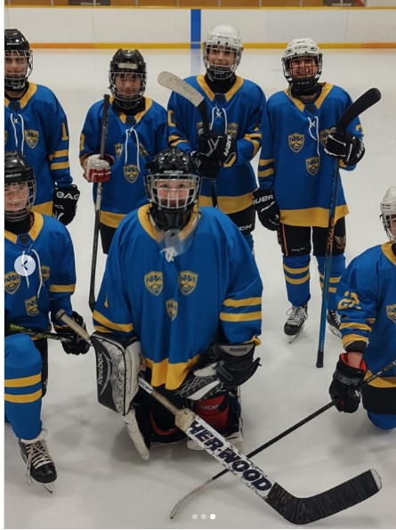
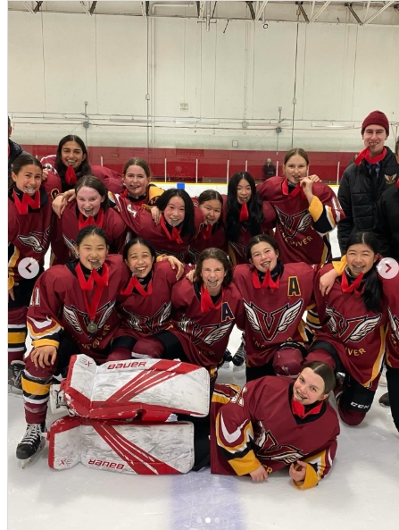
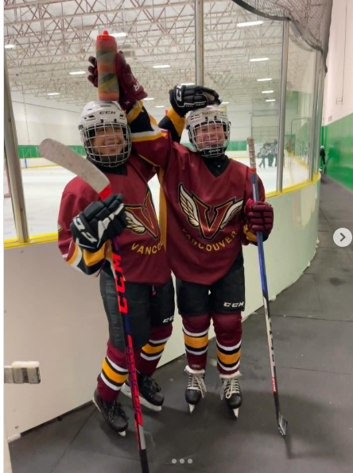
As I found my place in hockey, I fell in love with the game, the team, and the people. It pushed me to keep working hard and striving for excellence. As I grew, I continued to play for my local minor hockey association, along with my friends I made through the sport. We went on tournaments, stayed in hotels together, and bonded in a way I wouldn't have been able to do without hockey; and I was happy. However... as my skills improved, I wished for something more—something serious. Yes, I did enjoy the Angels, and yes, I did love my friends, but it just wasn't enough. Losing every game without a care in the world just wasn't my speed. I wanted fast, smart, and powerful gameplay that just isn't found at the Angels. I needed room to grow.
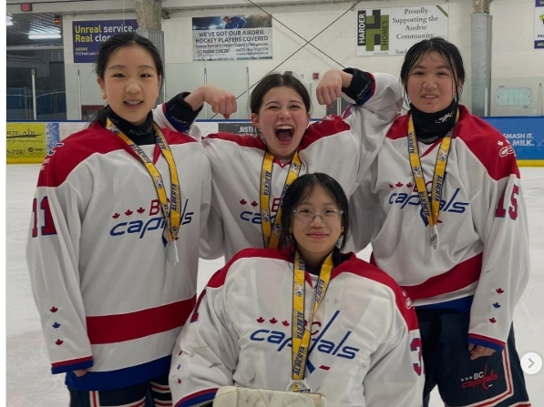
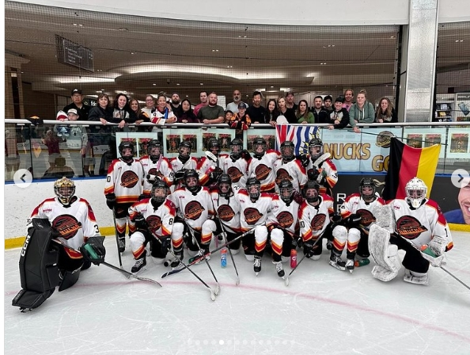
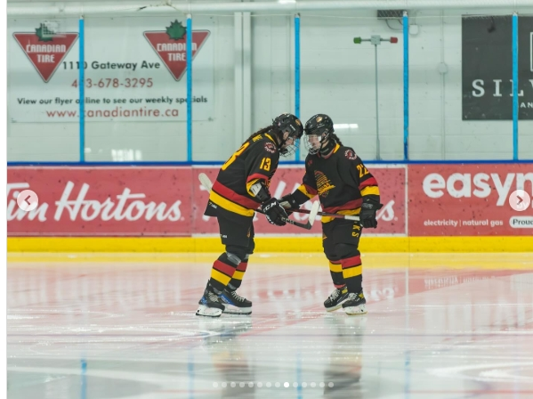
As I excelled in my minor hockey league, I began to focus more on training in the spring and summer. It was at this point in my journey that I decided to join two travel-only hockey teams (BC Capitals, and BC Jr Lady Canucks). During this period of time, I started to put in the extra effort I didn’t know I could, growing in skill and passion every single day. On one of my teams, we went to an invite-only tournament in the Edmonton Mall called The War for the Roses. This was an amazing experience that changed my perspective on hockey forever. I admired all the insane players that played with and against me, learning that I needed to do even more if I wanted to achieve my dream. When regular season started, I left my home association and took a crazy risk. I joined a brand new team as of this year. This team was special because it's the only FEMALE league in the world that allows full contact: the FSL. I bonded, improved, and changed more than I ever had.
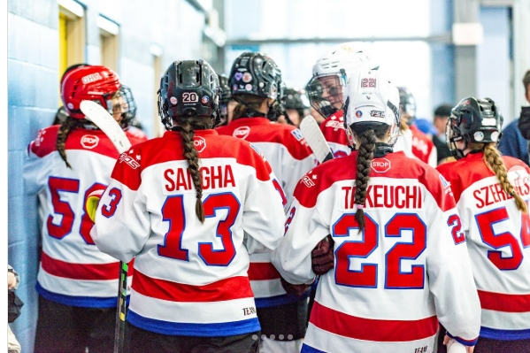
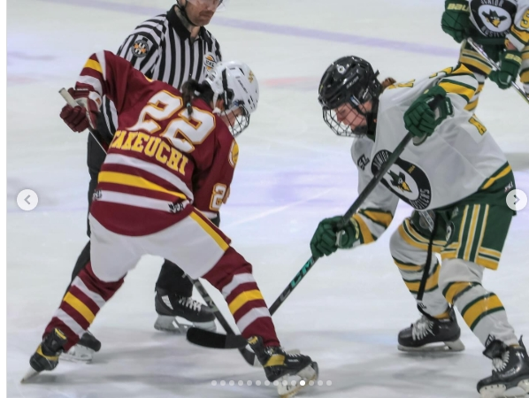
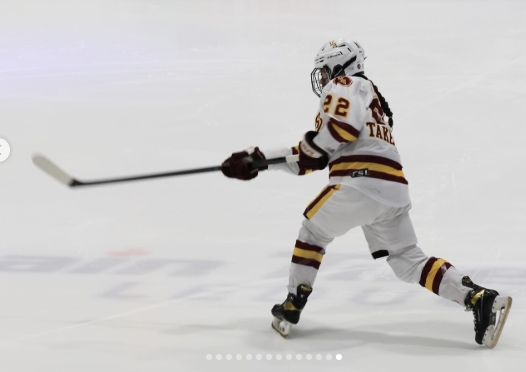
Currently, I am starting in a league I’ve never played in before: the BCEHL. I still strive to get better, but I am so proud of how far I’ve come. From being the worst to close to the best. I will always appreciate the memories I have made with all of my teammates—from home, from FSL, from spring hockey—everything. I don’t know what the future holds for me, but I do know that I will continue to work toward my goals and chase my dreams.